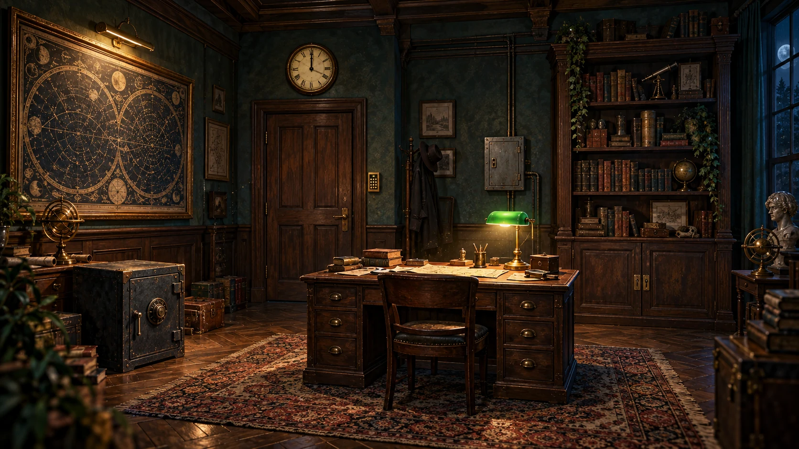

跳到游戏
Ⅶ
第七号档案
THE SEVENTH ARCHIVE
一场关于遗忘的逃脱
重新开始
01
THE LOCKED ROOM
封存的午夜
进度保存在此浏览器
00:00

档案室 / ARCHIVE ROOM
雨夜 · 23:47
点击光点，检查房间里的物件
THE DOOR IS OPEN
天快亮了。
而那些被遗忘的名字，终于等到了归途。
查看逃脱记录
随身物品
0 / 3
找到的物品，会收在这里。
调查物件
请启用 JavaScript，以进入档案室并解开机关。